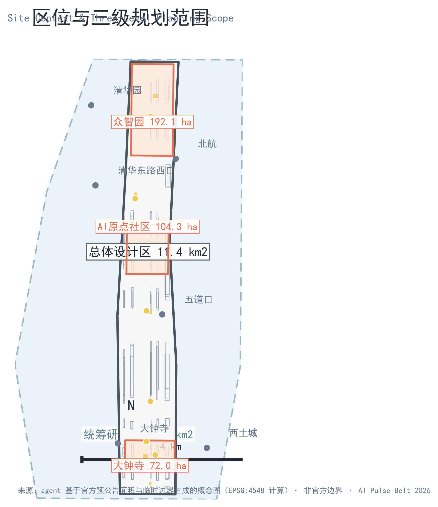
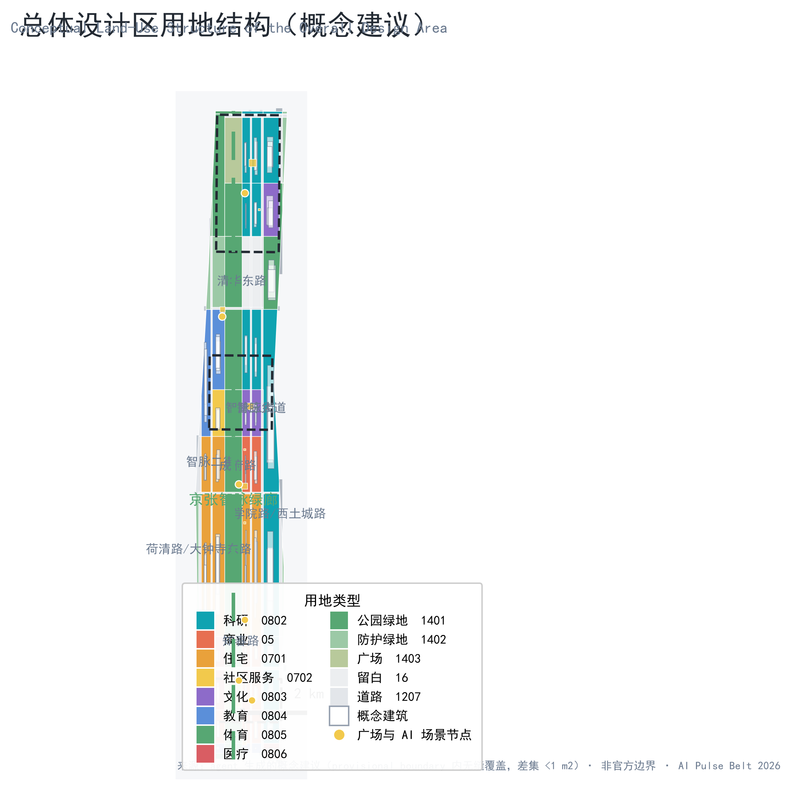
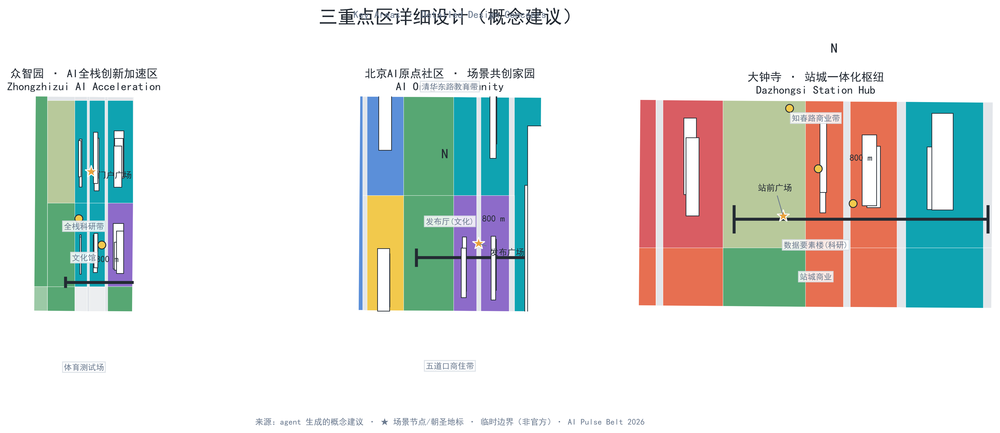
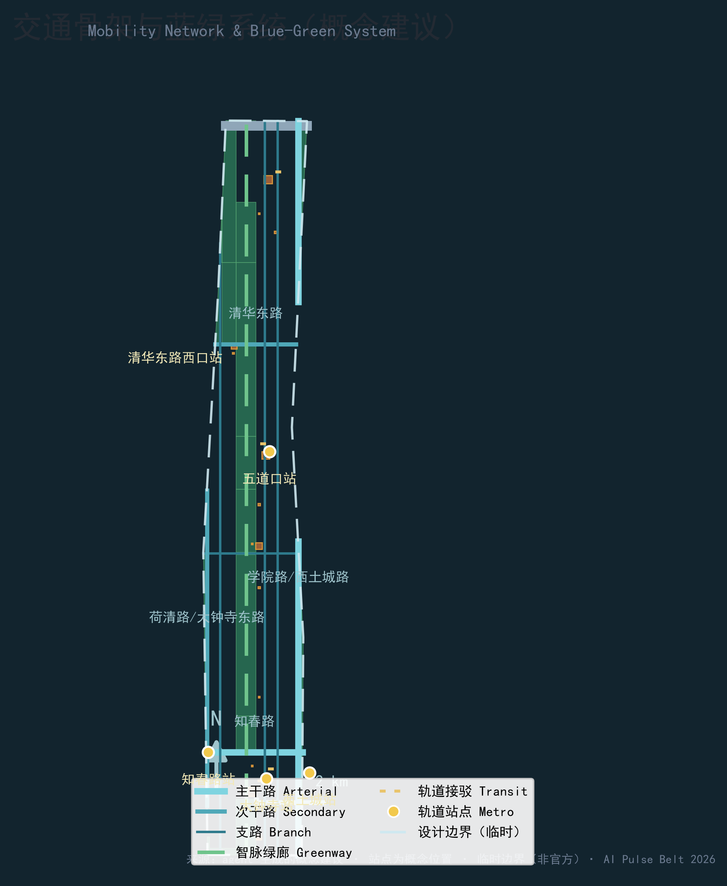
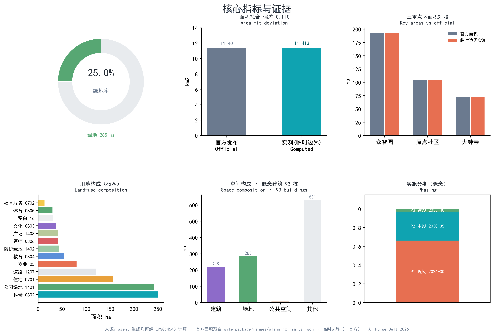

智脉一带 · AI Pulse Belt —— 百年京张AI创新带城市设计概念方案
以「智脉一带 · AI Pulse Belt」为总体意象的 formal AI 城市设计方案包：京张铁路百年'铁脉'转译为 AI 时代'数字智脉'，一带三核、双翼多点；全部几何基于官方临时边界生成并披露面积偏差，指标可复算、图层可校验、双语全对齐。
智脉一带 · AI Pulse Belt —— 百年京张AI创新带城市设计概念方案
设计依据与资料清单
本 formal 方案以北京市规划和自然资源委员会海淀分局发布的《百年京张AI创新带城市设计国际方案征集资格预审公告》为第一依据，并以 brief/site-package/ 中经维护者登记的临时粗略边界、重点区域、枚举、指标和来源清单为机器可读依据。AI agent 在生成方案前读取了 design_brief.json、allowed_design_space.json、sources.json、enums/、ranges/、schemas/、data/source_registry.json 与 data/processed/agent_fact_pack.md，并按 project_scope_summary.csv、agent_task_requirements.csv、source_use_matrix.csv、missing_data_checklist.csv 建立任务、范围、资料用途和缺口清单。所有设计判断均拆分为可追溯来源、可复算指标、可校验图层和可人工复核假设。公告要求方案达到控制性详细规划的城市设计深度和规划综合实施方案的城市设计深度，因此文本叙述不替代 GeoJSON、指标表、A3 文册、A0 展板和 HTML 电子展示成果 来源 来源 深度。
资料登记表的使用边界如下 来源：
data/source_registry.json登记公开、清权与临时资料的用途边界；当前登记摘要：formal 可用资料 7 条、背景资料 1 条、provisional-only 资料 1 条。- 本方案仅将 provisional 边界用于方案生成、自检、可视化和设计讨论，不升级为 official boundary、法定控规、正式评分依据或政府实施承诺。
data/processed/agent_fact_pack.md 是本方案的阅读导航层，不是新的权威来源 来源。事实判断均回到已登记原始材料；完整来源关系由 sources.json 保存。
本方案在官方 SITE_BOUNDARY 与三处 KEY_AREA 尚未取得时，使用 brief/site-package/geometry/provisional_boundaries.geojson 生成 formal 包 来源 来源：geometry/site_boundary.geojson 与 geometry/key_areas.geojson 均标注为 provisional_constraint、不声明 official_boundary=true，只能用于方案生成、自检、可视化和设计讨论。实测总体设计区面积 11.413 km2，与官方预公告值 11.4 km2 偏差 0.11%，已在 assumptions.json（ASSUME-002）披露 空间数据 指标。三处重点区数量由独立图层核对 空间数据 指标。组织方数据缺口不阻断内容评分；官方 polygons 发布后需重算 site boundary、key areas、land use、roads、green space、public space、buildings、phasing 与 metrics。
三层范围工作框架
方案按公告确定的三层范围组织工作：统筹研究范围 43.6 km2，研究 AI 产业生态、战略定位、创新链与未来城市形态；总体设计范围 11.4 km2，形成城市更新总体框架、产业空间布局、交通市政支撑和城市风貌控制；重点区域范围 368.4 ha 三处详细设计地区，明确功能业态、空间动作、公共空间连通与交通组织。三层范围在 compliance_matrix.json 中逐条映射，保证公告 1.3、1.4、1.5 与 agent.1–agent.6 必选任务均有章节、图层、指标、图纸和 HTML 证据 深度 深度 标准。
本方案总体概念为「智脉一带 · AI Pulse Belt」：延续京张铁路百年"铁脉"的记忆与线性空间骨架，塑造面向人工智能时代的"数字智脉"——以贯穿南北的中央绿廊为"一带"，以众智园、北京AI原点社区、大钟寺三处重点区为"三核"，以小月河场景赋能翼（西侧蓝绿生态界面）与中关村科技服务翼（东侧产业服务界面）为"双翼"，以 AI 场景节点与慢行网络为"多点"，形成"一带三核、双翼多点"的总体空间结构。Logo 意象为"脉"字与铁轨线渐变示波器波形：京张铁灰（#4A5560）与 AI 青（#0FA3B1）双色，口号"百年轨道，智慧脉动"。
| 层级 | 设计问题 | 方案回答 | 数据落点 |
|---|---|---|---|
| 统筹研究范围 | AI 产业生态与未来城市形态如何组织 | "高校策源—开源协作—企业转化—公共体验—国际传播"创新链 + 三区两翼协同 | compliance_matrix.json、standard_matrix.json |
| 总体设计范围 | 产业空间、城市更新、交通市政与风貌如何落图 | 中央绿廊 260 m 宽、"两横两纵"道路骨架、四分区带、155 块用地无缝覆盖 | 空间数据、空间数据 |
| 重点区域范围 | 三处片区如何达到详细设计深度 | 分别提出定位、空间动作、AI 场景与朝圣地标 | 空间数据、空间数据、空间数据 |
三层工作不是割裂图纸：统筹研究决定产业链与城市形态判断，总体设计将判断落实为更新项目与空间结构，重点区域详细设计验证具体地块、建筑、交通、公共空间与 AI 应用场景的可实施性 来源。任何无法从结构化数据复算的面积、比例、规模或项目数量，均不写入正式结论。

统筹研究范围产业与未来城市研究
统筹研究范围的核心任务是构建世界级 AI 创新生态体系。方案梳理海淀高校院所、头部企业、算力算法数据要素、孵化平台与科技服务资源，提出"高校策源—开源协作—企业转化—公共体验—国际传播"五环创新链的空间协同框架，并回应任务书"五大功能"与"三区两翼"协同要求 来源 标准。
生态图谱（概念建议）：参照全球 AI 创新区成功经验，提炼六类空间机制：土地供给（留白弹性用地，用地代码 16、共 4 处，承载未来业态）、空间组织（庭院式研发街区）、产业服务（算力/数据/合规/投融资一站式）、资金机制（场景开放与政府采购引导）、人才服务（人才特区与青年公寓）、数据场景（开放测试场与测评体系）。六个参考案例的机制转译与边界如下：
| 案例 | 可转化机制 | 京张应用 | 不可照搬条件 |
|---|---|---|---|
| 新加坡 Punggol Digital District | 产学研住一体、数字试验床 | 众智园科研带与测试场组织方式 | 新加坡单一土地机构与财政模式不同 |
| 赫尔辛基 Kalasatama | 敏捷试验街区、居民共测、限时试验 | 小月河翼受控测试与公众复盘 | 市政数据与采购制度不同 |
| 首尔 AI Hub | 政府培育 AI 企业的产业平台 | 众智园产业服务与算力入口组织 | 韩国产业生态与融资结构不可移植 |
| 剑桥 The Foundry | 校区—园区—社区三角联动 | 原点社区近校孵化接口 | 剑桥大学土地与科研资助结构不同 |
| 多伦多 Waterfront Toronto | 滨水创新走廊、公私合作开发 | 大钟寺站前与绿廊界面组织 | 加拿大公共资金与开发融资不同 |
| 巴黎 STATION F | 巨型孵化器与街区级创新网络 | 原点发布厅与开放工位运营 | 欧盟资金与法国劳动制度不同 |
全球案例结论均为概念参考，供专业团队深化，不构成已确定的政府安排。
三区两翼产业布局（概念建议）：
| 片区 | 产业侧重 | 空间落点 |
|---|---|---|
| 众智园AI自主创新加速区 | 大模型训练、全栈自主创新、标准制定与安全治理 | 众智园北部科研带、标准文化馆、体育测试场 空间数据 |
| 北京AI原点社区 | 近校孵化转化、开源体系、人才特区、成果发布 | 原点发布厅、清华东路教育带、五道口商住带 空间数据 |
| 大钟寺AI产业聚集区 | 智能体、智能终端、内容消费、数据要素 | 知春路商业带、数据要素楼、站前商业 空间数据 |
| 小月河场景赋能翼（西翼） | 场景试验、生态体验 | 西侧防护绿地与场景测试段 空间数据 |
| 中关村科技服务翼（东翼） | 科技服务、国际交往 | 学院路沿线科研与服务平台 空间数据 |
区域协同接口（概念建议）：统筹研究范围以五类接口衔接更大创新网络；现阶段无已确认的跨区协议，接口仅表达可协商方向 来源：
| 接口 | 协同问题 | 建议互动形式 | 边界与前提 |
|---|---|---|---|
| 北纬社区 | 社区级 AI 服务在不同住区条件下的适用性差异 | 跨社区对照复测、问题清单互换 | 以公开议题为限，不虚构共同运营或居民授权 |
| 未来科学城 | 前沿技术从实验室到城市场景的落地验证路径 | 专家复核方法互借、研发反馈回环 | 研究成果不作产品化承诺，不提前发布未审结论 |
| 怀柔科学城 | 大科学设施成果向城市生活服务的转译需求 | 跨学科验证建议、测量方法交流 | 不触及非公开科研与设施数据 |
| 北京经开区 | 机器人与智能制造的真实工况与安全要求 | 生产环境复测记录、安全要求互认 | 不虚构企业、订单或产线合作 |
| 京津冀城市网络 | 可跨城比较的公共服务问题与差异归因 | 异地复测、差异说明与失败记录公开 | 单点结果不替代跨城验证 |
未来城市形态研究回答人工智能如何改变工作、生活、社交、学习、交通与公共服务：以"数字智脉"为空间线索，把 AI 交通系统、连续绿色空间、创新服务设施与国际化生活工作氛围落实为可定位的功能区、节点、廊道与场景 深度 标准。全球 AI 创新活动、开发者社区、开放场景与朝圣路线均表述为"概念建议/参考方案"，不写为已确定的政府活动或实施安排。
总体设计范围城市更新与控规深度城市设计
总体设计范围（实测 11.413 km2）要求达到控制性详细规划的城市设计深度 标准。本方案提出以中央智脉绿廊为脊的总体结构 空间数据：沿绿廊东西两侧组织用地，形成四个分区带——众智园科研带（北）、原点社区产城融合带、大钟寺商业科研带、南部更新带，并预留南端留白弹性用地承载未来 AI 业态（16 留白用地 4 处）深度 深度。
道路网络（概念建议）：以"两横两纵"为骨架——横向北五环（快速路）、清华东路（次干路）、成府路（支路）、知春路（主干路）；纵向学院路/西土城路（主干路）、荷清路/大钟寺东路（次干路）；并新增设计道路智脉大道、智脉二街、智脉三街组织地块微循环，中央绿廊内设连续绿道 空间数据 空间数据。
用地结构（概念建议）：geometry/land_use.geojson 共 155 个地块，13 类用地，完整覆盖设计边界且无重叠（差集 <1 m2，已由 validate_cover 校验）空间数据。科研用地（0802）为主导类型，商业（05）、住宅（0701）、文化（0803）、教育（0804）等协同支撑；中央绿廊（1401 公园绿地）宽约 260 m，贯通南北 空间数据。geometry/buildings.geojson 表达 93 栋概念建筑基底（design_proposal 属性，非法定许可）空间数据 指标。涉及建筑高度、开发强度、道路红线、退线与设施标准的内容，在官方控制条件发布前一律按"待正式控规条件确认"处理，不以 agent 推测值冒充审定指标。

重点区域详细设计
三处重点区域达到规划综合实施方案深度 深度，分别引用 空间数据、空间数据、空间数据。
| 重点片区 | 设计定位 | 空间动作 | AI 产业与运营场景 | 证据引用 |
|---|---|---|---|---|
| 众智园AI自主创新加速区（192.1 ha） | 花园型全栈自主创新街区 | 北临五环设绿带缓冲；门户广场接驳；科研院落 + 标准文化馆 + 体育测试场 + 留白弹性用地 | 大模型训练测试、标准制定工作坊、安全治理展示、低碳算力体验 | 空间数据、空间数据、空间数据 |
| 北京AI原点社区（104.3 ha） | 近校型成果转化与人才社区 | 清华东路教育带缝合校区园区；原点发布厅（文化 0803）；五道口商住带；社区服务嵌入 | 开源社区、成果发布、人才特区服务、近校孵化 | 空间数据、空间数据、来源 |
| 大钟寺AI产业聚集区（72.0 ha） | 站城一体化智能经济街区 | 大钟寺站前广场四象限步行连通；知春路商业带；数据要素楼；站城商业复合 | 智能体与智能终端展示、内容消费、数据要素与国际路演 | 空间数据、空间数据、指标 |
三处重点区在 geometry/key_areas.geojson 中均以 provisional_constraint 呈现，正文、HTML、sources、assumptions 与 self_check 均说明其不可作为正式评分或审批依据。compliance_matrix.json 分别覆盖公告 1.5.3.1、1.5.3.2、1.5.3.3。设计表达包含功能业态、概念建筑、公共空间系统、交通组织与实施项目；A3 文册与 A0 展板含重点片区总图、局部详图与指标说明，HTML 页面可切换查看三处重点区域。

AI 创新生态、人才画像与 AI+ 场景
方案建立面向 AI 人才和企业的空间需求画像，并形成"产业发展场景 + AI 赋能城市功能场景"双线场景体系。每个场景均说明服务对象、空间位置、数据来源、隐私边界、人工复核机制与运营主体 来源。
5 类用户画像：
| 用户画像 | 典型需求 | 空间响应 | 不能忽略的风险 | 自检边界 |
|---|---|---|---|---|
| 初创工程师 | 低成本办公、算力入口、产品试验场 | 众智园共享测试场、端侧算力服务点、标准治理咨询 | 算力与数据服务依赖单一供应商 | 算力和数据服务需另行授权；保留公共测试场与标准入口防锁定 |
| 科研人员 | 跨机构协作、成果转化、学术交流 | 原点发布厅、科研院落、清华东路教育带 | 成果转化窗口期短、依赖一次性政策 | 校园数据和科研成果需授权；以常态院落交流支撑，不绑定单一政策 |
| 家庭周末客 | 亲子休闲、运动、文化体验 | 中央绿廊、口袋公园、体育测试场、钟韵文化体验 | 高峰人流承载与影像隐私顾虑 | 不采集个人行为轨迹，活动数据只做聚合统计；高峰分流 |
| 银发游客 | 无障碍导行、慢速休闲、文化讲解 | 无障碍 AI 导行站、智脉艺术铁轨休憩带 | 数字化门槛造成数字排斥 | 健康类数据不用于商业推荐；保留人工导览/电话预约等非 AI 替代通道 |
| 开发者社区运营者 | 活动组织、代码协作、社区声誉 | 开发者露天工位代码墙、发布广场、智盒会议亭 | 活动运营依赖补贴，补贴退坡即停摆 | 公共活动数据匿名聚合；按"立项—试办—评估—续办/退役"管理 |
12 张场景卡（概念建议）：
| 场景卡 | 空间载体与设计说明 | 数据与人工边界 | 运营主体 | KPI 与退出条件 |
|---|---|---|---|---|
| 01 铁轨巡检AR孪生 | 中央绿廊铁轨段：AR 叠加百年影像与 AI 孪生巡检演示 | 仅聚合点位热度，不采集个人影像 | 轨道遗产管理方+区测试办 | AR 史实准确率≥98%；史实投诉未修复即下线 |
| 02 无人接驳巴士走廊 | 智脉大道沿线：园区—轨道站无人接驳示范线（概念）[scenario:ai-traffic-walkability] | 行程数据仅用于调度，留存期后匿名化 | 公交集团+区测试办 | 准点率≥85%；事故即停线转人工 |
| 03 AI 骑行教练站 | 绿廊绿道节点：骑行数据可视化与 AI 运动指导 | 骑行数据仅本人可见、可一键删除 | 属地街道+绿廊运营 | 设备故障 24h 内修复；隐私投诉即暂停 |
| 04 钟韵元宇宙 | 大钟寺站前：钟声文化数字孪生与互动展演 [scenario:ai-cultural-guide] | 不采集个人行为轨迹 | 大钟寺文化机构+属地 | 内容投诉响应≤48h；文保冲突即撤除 |
| 05 智盒会议亭 | 各研发街块节点：自助会议、直播与远程协作微型空间 | 音视频内容由使用者自持，平台不留存 | 园区运营平台 | 爽约率过高即调整容量；投诉即停用 |
| 06 无人机配送驿站 | 众智园南块：低空物流接驳试验驿站（概念）[scenario:robot-delivery-low-speed] | 不采集人脸；配送记录 30 天删除 | 配送企业+空域监管 | 安全隐患零容忍；空域审批未过不开通 |
| 07 AI 园艺师口袋公园 | 各住区街角：植物养护 AI 协作与社区认养 | 仅记录植物养护与认养数据 | 社区居委会+街道 | 认养参与率≥30%；扰民投诉即调整 |
| 08 无障碍 AI 导行站 | 轨道站与绿廊节点：语音/触觉多模态无障碍导航 [scenario:ai-health-service-navigation] | 不保存个人轨迹，现场可核验 | 残联+运营方 | 人工替代率 100%；现场不符即停用 |
| 09 赛事数据可视化墙 | 体育测试场周边：智能体育赛事实时数据大屏 | 仅聚合展示，不识别个人 | 体育机构+赛事运营 | 数据口径标注时间；预警人工研判 |
| 10 建筑能耗 AI 调控楼 | 众智园科研带：分布式能源与 AI 能耗调控示范（概念） | 能耗数据按楼栋聚合，不涉及户内 | 能源企业+园区物业 | 调控失误即时人工接管；连续失误停用 |
| 11 AI 咖啡机器人驿站 | 商业街与研发街角：机器臂咖啡体验与开发者社交 | 订单数据最小化，支付走标准渠道 | 商业运营方 | 机械故障即停；投诉响应≤24h |
| 12 开发者露天工位代码墙 | 原点发布广场周边：开源贡献墙、露天工位与演示区 | 公开贡献数据匿名聚合 | 开源社区+属地运营 | 内容审核人工终审；争议即下架 |
场景卡按八要素结构展开：服务对象、空间载体、用户旅程、输入数据、AI 能力、基础设施、运营主体、失败降级。以 01 铁轨巡检 AR 孪生为例：旅程为游客扫码→AR 叠加百年影像→点位热度聚合展示；输入数据为公开影像与巡检点位（无个人影像）；AI 能力为图像配准与史实比对；基础设施为沿线识别桩与导视屏；失败降级为识别失败即提示并转人工核验。其余场景卡在详细设计阶段按同一结构展开。
3 个产业测试验证场景（概念建议）：每个场景均在 geometry/public_space.geojson 落位测试节点，按智脉脉冲协议 P2 受控测试运行：
| 测试场景 | 位置与范围 | 测试内容 | 数据与安全边界 | KPI 与退出条件 |
|---|---|---|---|---|
| 车路协同开放测试段 | 智脉大道概念段 1.2 km 空间数据 | 车路协同与无人接驳（场景卡 02）[scenario:ai-traffic-walkability] | 车辆状态与路况数据仅用于测试；事故即停转人工 | 累计测试无重大事故；重大事故即停测 |
| 低空配送航线验证 | 众智园—大钟寺概念航线 空间数据 | 无人机配送（场景卡 06）[scenario:robot-delivery-low-speed] | 遵守空域与安全法规；不采集人脸 | 空域审批未过不开通；安全隐患零容忍 |
| 多模态导视测评场 | 绿廊全线 空间数据 | 无障碍导行多模态测评（场景卡 08） | 不保存个人轨迹，现场可核验 | 现场核验不符即停用 |
公共安全类 AI 应用仅做运营评审研究，不替代人工复核 [scenario:public-safety-operations-review]。健康服务类应用（挂号陪诊提示、急救点位导引、慢病管理信息提示等）仅做信息提示，不做出医疗决策，数据不落盘 [scenario:ai-health-service-navigation] 空间数据。
3 个 AI 朝圣地标（概念建议）：AI 原点之钟（大钟寺站前广场，钟韵文化与 AI 起源意象）、AI 之光塔（众智园门户广场，光艺术 + 模型推理实时可视）、智脉艺术铁轨（中央绿廊北段，废弃铁轨艺术化改造 + 数字投影）。朝圣路线"百年轨道，智慧脉动"与 10 号场景卡"全球 AI 活动周路线"联动 空间数据 空间数据。
荣誉展示体系（概念建议）：开发者贡献墙（场景卡 12 代码墙）、协创者名录屏与年度智脉奖构成递进式荣誉阶梯，与脉冲协议 P4 复盘公开联动；荣誉数据仅聚合公开贡献，不做个人评分。相关公共空间与绿地指标在 metrics.json 中均为 known 状态、可直接复算 指标 指标。
AI 治理建议遵守数据最小化、公开来源、可解释与人工复核原则：城市智能体可辅助识别慢行断点、公共空间热力、设施维护、企业服务需求与活动安全风险，但不替代规划审批、不输出未经授权的个人画像、不声称获得官方实施承诺。所有场景节点均进入结构化图层或合规矩阵。
公共利益与包容性设计（概念建议）：以无障碍（GB 50763）、适老与数字化平权为底线——非 AI 替代通道（人工导览、电话预约、线下人工服务）始终保留；涉及公共利益与个人数据的应用进行隐私影响评估（PIA）；运营与开发主体的利益冲突通过协议披露与公众委员会申诉机制处理；夜间工作者、低收入群体与非数字用户的使用需求在详细设计阶段逐项复核。
智脉脉冲协议（运行机制）
方案为每一项进入公共空间的 AI 服务设定"四拍回路"运行机制，与"智脉"命名同构：服务像脉冲一样拥有明确的申报、测试、发布与复盘节拍，任何服务不能无限期停留在"试点"状态，也不能未经测试直接发布 标准 深度：
| 节拍 | 动作 | 边界条件 | 未通过的处理 |
|---|---|---|---|
| P1 申报 | 声明服务目的、数据上限、责任主体、人工等价路径与结束条件 | 任一要素缺失不进入测试 | 退回补充材料 |
| P2 测试 | 受控试点：预约、分区、现场安全员、实体急停、独立复测 | 未完成复测不进入发布 | 修正后重测或退出 |
| P3 发布 | 公开运行，导视状态灯可视化：稳定波形=正常运行、脉冲闪烁=测试中、平线=已停用 | 运行边界失效即降级回 P2 | 停止服务并恢复场地 |
| P4 复盘 | 数据回检、公众反馈与失败记录公开，决定继续、调整或退役 | 未复盘不续期 | 退役并完成数据与场地恢复 |
统一回滚触发器（五类）：任一 AI 服务出现下列情形即按协议降级或停用——安全类（实体或线上安全事件，事故即停）、隐私类（数据越界或投诉成立）、文保类（与文物风貌冲突即撤除）、生态类（扰民、噪声或公共空间占用争议）、经济类（运营不可持续且无替代资金来源）。触发器清单与各场景卡退出条件一一对应，纳入 P4 复盘公开记录。
12 张场景卡、3 个产业测试场景、年度活动与 AI 朝圣地标均按此协议定义运行边界；协议是方案运行机制建议，不替代规划审批、行业监管与法定评估。
用地、建筑规模与拆改留方案
用地方案依据国土空间调查、规划、用途管制分类等公开标准表达，形成完整、闭合、无缝的用地分区 标准 空间数据。13 类用地中科研 0802 为主导（14 地块），商业 05（10）、住宅 0701（6）、教育 0804（6）、医疗 0806（6）、文化 0803（3）、体育 0805（1）、社区服务 0702（1）、公园绿地 1401（12）、防护绿地 1402（9）、广场 1403（2）、道路 1207（81）、留白 16（4），合计 155 地块无缝覆盖 深度。
建筑方案区分保留、改造、更新、新建与待确认对象：由于缺少现状建筑、权属、控规与工程条件，本方案只提供方法框架与待校准清单，不编造拆改留结论 深度 深度 标准。geometry/buildings.geojson 的 93 栋概念建筑全部标注 status=design_proposal、confidence=low，仅表达体量组织意图 空间数据 指标。总建筑规模、容积率、建筑高度、建筑密度等指标在官方条件缺失时统一为 status=unknown（见 指标，reason 已说明待补条件与复算路径）。
交通、轨道、市政与公共服务设施
交通方案回应公告对轨道站点一体化、道路微循环、慢行断点、对外交通、停车、非机动车停放与绿色交通系统的要求 深度 空间数据 空间数据：
- 轨道接驳（概念）：以大钟寺站、五道口站、知春路站、西土城站、清华东路西口站为锚点，设 3 条概念接驳线（ROAD-011/012/013）与无人接驳巴士走廊（场景卡 02）[scenario:ai-traffic-walkability]；
- 道路微循环：智脉大道（28 m 概念红线）、智脉二街/三街组织街区级循环，慢行绿道沿中央绿廊全线贯通 空间数据；
- 慢行断点：概念提出北五环跨环慢行节点与绿廊南北两端景观节点（详见图 04 与
constraints.geojson）空间数据； - 停车与非机动车停放以"轨道 + 接驳 + 慢行"为优先序，具体规模待交通专项与控规条件确认。
市政与公共服务设施覆盖 AI 产业服务设施（算力、数据、合规、投融资一站式服务点，企业服务智能体融入 [scenario:enterprise-service-copilot]）、人才生活服务设施、新型基础设施（端侧算力驿站、分布式能源节点，场景卡 10）与传统市政设施融合 深度。管线、能源、排水、防洪、消防等工程资料缺失时列为正式深化前置条件，通过 assumptions.json 说明待补，不写成审定条件。
蓝绿空间、公共空间与城市风貌
蓝绿空间（概念建议）：以中央智脉绿廊为脊（260 m 宽、贯通南北、总面积约 284.9 ha、绿地率 25.0%）空间数据 指标，西侧防护绿带呼应小月河场景赋能翼，东侧沿学院路设防护绿带，各街区植入口袋公园与广场节点 空间数据 深度。6 处广场（大钟寺站前、原点发布、众智园门户、五道口生活、清华东路西口、南部社区）构成公共空间骨架。
公共空间组件库（6 类，概念建议）：广场（节点聚合）、口袋公园（住区嵌入）、导视节点（波形状态灯语言）、活动草坪（绿廊分段）、水景旱喷（站前广场）、智慧城市家具（充电/座椅/信息屏）——组件复用保证公共空间可识别、可维护、可批量实施。

城市风貌（概念建议）：融合京张铁路历史文化、中关村创新文化与 AI 创新文化三线叙事 深度 标准：清华园火车站遗址节点与智脉艺术铁轨承载铁路记忆；AI 原点之钟、AI 之光塔承载 AI 文化；导视符号系统以"铁轨—波形"母题统一——公共导视采用"波形状态灯"语言：稳定波形=正常运行、脉冲闪烁=测试中、平线=已停用，与智脉脉冲协议联动，市民无需阅读说明即可识别 AI 服务运行状态。风貌控制区分官方管控、设计建议与待确认条件，严禁在无文保或控规依据时给出伪精确控制线。所有品牌、字体、图像、肖像与企业标识均需清权来源（见 report/copyright_statement.md）。
视觉识别（VI）规范（概念建议）：Logo 以"脉"字与铁轨—波形母题为核心，规定最小使用尺寸（屏显 ≥24 px、印刷 ≥10 mm）、安全区（不小于 1/4 字高留白）、黑白与反白版本、标准色 #4A5560（京张铁灰）与 #0FA3B1（AI 青）及辅助色；字体授权清单与图元文件见 report/copyright_statement.md。VI 图元及导视系统落地前须经官方审批，本规范为概念建议。
更新项目清单、实施政策与分期计划
更新项目清单（概念建议，共 12 项）：
| 项目编号 | 项目名称 | 类型 | 近期动作 | 放行证据 | 牵头建议 |
|---|---|---|---|---|---|
| JZ-01 | 中央智脉绿廊贯通工程 | 公共空间/蓝绿 | 沿线步行审计、临时导视、桥下空间清障 | 红线、交通组织与生态复核 | 区园林绿化局+交通部门 空间数据 |
| JZ-02 | 北五环跨环慢行节点 | 交通/慢行 | 断面与高架条件评估 | 结构安全与跨线审批 | 交通委+专业设计单位 空间数据 |
| JZ-03 | 众智园门户广场与 AI 之光塔 | 公共空间/地标 | 概念方案与光环境试验 | 权属与景观审批 | 园区运营平台 空间数据 |
| JZ-04 | 原点发布厅与代码墙 | 产业服务/文化 | 首层业态策划、开源活动试运营 | 权属与运营主体确认 | 中关村开源社区+属地 空间数据 |
| JZ-05 | 大钟寺站四象限步行连通 | 轨道一体化/慢行 | 过街时长、无障碍、非机动车停放调查 | 轨道站与道路交叉口复核 | 属地+轨道运营方 空间数据 |
| JZ-06 | 智脉大道无人接驳示范段 | 交通/新基建 | 法规梳理与信号条件评估 | 路测备案与安全预案 | 区测试办+公交集团 空间数据 |
| JZ-07 | 清华东路教育带缝合 | 城市更新/教育 | 校区边界与慢行安全调查 | 权属与校区同意 | 街道+高校 空间数据 |
| JZ-08 | 南部更新带提升 | 城市更新/住宅 | 现状建筑与用地调查 | 拆改留专项评估 | 属地+规划团队 空间数据 |
| JZ-09 | 低空配送航线验证场 | 新基建/产业测试 | 空域与安全监管梳理 | 空域审批 | 属地+监管机构 空间数据 |
| JZ-10 | 端侧算力与能耗调控示范楼 | 新基建/市政 | 能源与算力需求评估 | 消防与运营主体确认 | 能源企业+园区 空间数据 |
| JZ-11 | 无障碍 AI 导行系统 | 公共服务/无障碍 | 标准与数据授权梳理 | 无障碍设施标准复核 | 残联+运营方 空间数据 |
| JZ-12 | 全球 AI 活动周公共路线 | 运营/品牌 | 活动许可与版权清权 | 公共空间许可与安全预案 | 联合运营机构 空间数据 |
协议挂接（概念建议）：12 个项目按智脉脉冲协议归入三类——P1 申报类（JZ-04/07/08/11，先完成申报要件）、P2 测试类（JZ-06/09/10/12，受控试点后发布）、P3 发布类（JZ-01/02/03/05，公共空间与基础设施先行，运行后纳入 P4 复盘）。各项目"放行证据"列即其首道审批门，未通过不得进入下一节拍。
实施分期（概念建议）（geometry/phasing.geojson，深度 深度）：P1 近期（2026–2030）——三重点区先行：众智园、原点社区核心带、大钟寺核心带（空间数据）；P2 中期（2030–2035）——绿廊全线贯通 + 大钟寺北块与南部北块（空间数据）；P3 远期（2035–2040）——南部更新带与留白弹性用地（空间数据）。征集周期（100 天）与实施分期严格区分：前者是提交成果时间要求，后者是城市更新推进路径。近期可先以轻量设施、运营活动与服务平台启动（场景卡、朝圣地标、导行系统），远期内容等待正式控规、市政、交通与权属条件确认。年度活动体系（开发者大会、场景开放日、国际 AI 周）说明运营对象、频率、责任边界与转化路径，不写宣传口号 来源。
运营治理结构（概念建议）：建议以"一个秘书处、三个片区站、两个专业翼、一个公众委员会"组织日常运营——秘书处负责脉冲协议与台账管理，片区站对接三重点区，专业翼分别负责产业服务与公益服务，公众委员会对活动与场景行使知情、建议与申诉权。资金来源按"财政引导（可公开申请）—场景服务收益—开源与公益基金"三源组合；活动按"立项—试办—评估—续办/退役"四步管理，评估不通过即停止并公开原因。
指标体系、面积复算与合规矩阵
指标体系（metrics.json）含 6 项：总体设计范围面积（site_area_sqm，实测 11,412,825.4 m2，官方 11,400,000 m2，偏差 0.11%）、建筑基底面积（building_footprint_area_sqm，约 116.8 ha）、绿地率（green_ratio，25.0%）、公共空间比例（public_space_ratio，约 6.2 ha）、重点区数量（key_area_count，3）与容积率（floor_area_ratio，status=unknown，官方 FAR 控制缺失）。所有 known 指标均可从 GeoJSON 复算 指标 空间数据 深度。
| 指标 | 当前值 | 置信度 | 用途 |
|---|---|---|---|
| 总体设计范围面积 | 11,412,825.4 m2 | 高（实测复算） | 全部空间比例的分母 |
| 建筑基底面积 | 约 116.8 ha | 中（概念体量） | 建筑规模量级参考 |
| 绿地率 | 25.0% | 中（provisional 边界） | 蓝绿系统绩效 |
| 公共空间比例 | 约 6.2 ha（0.54%） | 中（provisional 边界） | 公共空间系统绩效 |
| 重点区数量 | 3 | 高（图层核对） | 详细设计范围确认 |
| 容积率 | unknown | 待官方条件 | 不进入任何结论 |

指标分三类管理：① 可由提交几何直接复算的空间指标（面积、比例、分期面积）；② 需官方控规支撑的管控指标（容积率、高度、密度、退线、红线——目前 unknown）；③ 需运营数据校准的绩效指标（AI 创新指数、人才密度、场景使用频次——概念建议）。三类分别进入 metrics.json、assumptions.json 与 compliance_matrix.json，避免把运营愿景误写成审定规划条件 标准。
合规矩阵覆盖公告 1.3、1.4、1.5 与 agent.1–agent.6 全部必选任务：agent.1 命名体系与标识（本节与第三章）、agent.2 全球案例与生态图谱（第三章）、agent.3 场景卡/测试场景/画像（第六章）、agent.4 朝圣地标与荣誉展示（第六章、第九章）、agent.5 文化叙事与导视（第九章）、agent.6 活动体系与社区运营（第十章）。scripts/spatial_review.py 与 scripts/visual_review.py 的结果是 formal 自检证据。
风险、版权与合规说明
双语要求：本方案中文主文件与英文对照译稿 proposal.en.md 完整对齐（bilingual_contract_version 1）；A3/A0 图纸、HTML 与含文字图件均提供双语表达，优先使用 docs/terminology-glossary.md 推荐译法。所有图片、图纸、图标、数据与代码资产在 sources.json 与 report/copyright_statement.md 中说明来源、许可与授权状态；HTML 页面不加载远程脚本、远程地图瓦片、远程字体、iframe、表单或外部 API，不跟踪评审者行为。
风险与缺资料清单：official boundary、key area、控规、道路红线、地块权属、建筑现状、市政管线、文保与公共服务缺口均进入 assumptions.json（ASSUME-001/002、A-CONTROLS-001、ASSUME-004）与本节；任何缺少官方控规、道路红线、权属、市政、消防或文保条件的结论均降级为待确认事项 深度 空间数据 来源。
证据失效级联降级：若本方案引用的任何来源（sources.json 登记条目或官方数据）被撤回、失效或修正，对应主张、指标、图件与合规矩阵条目同步降级为待确认，并重算受影响几何与指标；降级记录进入变更记录与脉冲协议 P4 复盘。
文保专项（概念建议）：清华园车站遗址与沿线历史构件一律低干预处理，AI 展示装置全部站外可撤回、不依附文物构件、不改变遗址结构；大钟寺周边设计以风貌协调为底线，与文保单位的冲突处理以撤回方案为默认路径。
术语一致性：核心概念（智脉一带、一带三核、脉冲协议等）的中英文译法以 docs/terminology-glossary.md 为准，中英两文件逐段对齐（bilingual_contract_version 1），A3/A0 图纸与 HTML 采用同一术语体系。
本方案不声称官方批准、审定控规、最终土地权属、最终建设规模或保证实施。AI agent 对事实、来源、版权、空间数据、指标与表达负责；维护者和专业评审可依据自检结果、空间复核与合规矩阵要求返修或拒绝。
参考资料
- brief/public-brief.md
- brief/site-package/design_brief.json
- brief/site-package/agent_taskbook.json
- brief/site-package/allowed_design_space.json
- brief/site-package/enums/
- brief/site-package/ranges/planning_limits.json
- brief/site-package/geometry/provisional_boundaries.geojson
- data/source_registry.json
- data/processed/agent_fact_pack.md
- data/processed/project_scope_summary.csv
- data/processed/agent_task_requirements.csv
- data/processed/source_use_matrix.csv
- data/processed/missing_data_checklist.csv
- 完整机器索引：见
sources.json、metrics.json、compliance_matrix.json、standard_matrix.json与design_depth_matrix.json - 本节书目入口依据场地包登记，完整出处和许可见结构化来源清单 来源